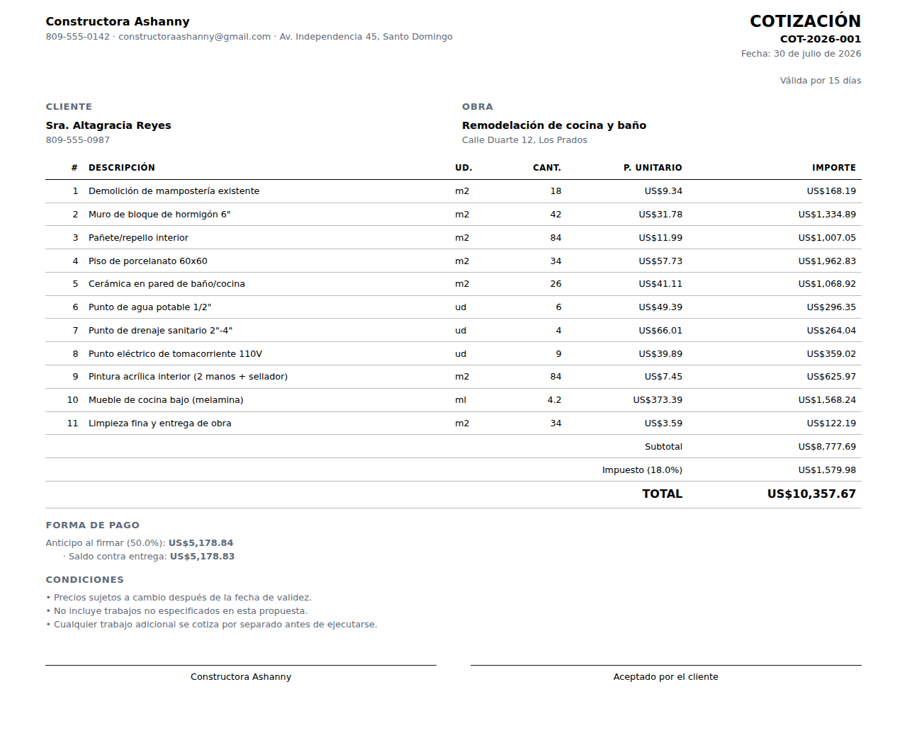

Un cotizador para contratistas pequeños. Se abre como un archivo, funciona sin internet, y te avisa antes de que firmes una obra que pierde.
Sin registro, sin mensualidad, sin subir tus precios a ningún servidor.
Tu obra cuesta $10,000. Quieres ganar 25%. Entonces multiplicas por 1.25 y cotizas $12,500.
| Cómo lo calculas | Cobras | Ganas | Margen real |
|---|---|---|---|
| Costo × 1.25 (lo que casi todos hacen) | $12,500.00 | $2,500.00 | 20.0% |
| Costo ÷ 0.75 (margen real del 25%) | $13,333.33 | $3,333.33 | 25.0% |
$833 de diferencia en una sola cotización. No porque cobraras barato a propósito, sino porque el 25% sobre el costo no es 25% sobre la venta. En diez obras al año son $8,333 que nunca supiste que dejaste en la mesa.
El cotizador calcula margen real por defecto. Si prefieres trabajar con markup, también puedes — pero te muestra en pantalla, en pesos, cuánto te está costando.

Mientras cotizas, la herramienta revisa lo que estás a punto de firmar:
Por debajo del 10% te dice, en pesos, cuál es el punto donde empiezas a trabajar gratis.
Si dejaste la contingencia en cero, te lo recuerda. En obra siempre aparece algo.
Te dice cuánto material vas a estar financiando tú si cobras menos del 40% al firmar.
Si usas markup, te muestra el margen real y la diferencia exacta en esta cotización.
Es un solo archivo HTML. Lo descargas, lo guardas en el celular y se abre sin señal, parado en medio de la obra. No hay servidor que se caiga, no hay cuenta que recuperar, no hay mensualidad que se te olvide pagar.
Tus precios de compra quedan guardados solo en tu navegador. Nadie más los ve — y lo que le pagas al bloquero es parte de tu ventaja competitiva.
Sí. Licencia MIT: úsalo, cámbialo y véndelo si quieres. No hay versión "pro" ni límite de cotizaciones.
Son un punto de partida en dólares, con órdenes de magnitud del mercado caribeño y latinoamericano. Están pensados para ajustarse: siéntate media hora con tres facturas recientes de tu ferretería, corrige las partidas que más usas, y a partir de ahí cotiza con tus números reales.
Se guardan en tu navegador. Si borras los datos del navegador o cambias de teléfono, se van. Por eso hay un botón de Respaldo que descarga todo en un archivo — mándatelo por correo de vez en cuando y estás cubierto.
Nunca. La tabla de costos es solo tuya. El documento impreso muestra un precio unitario de venta que ya lleva tus gastos y tu ganancia por dentro, repartidos entre las partidas.
Configurable. Viene en 18% (ITBIS de República Dominicana), pero lo cambias al de tu país o lo pones en cero. También puedes cotizar con el impuesto ya incluido en el precio.